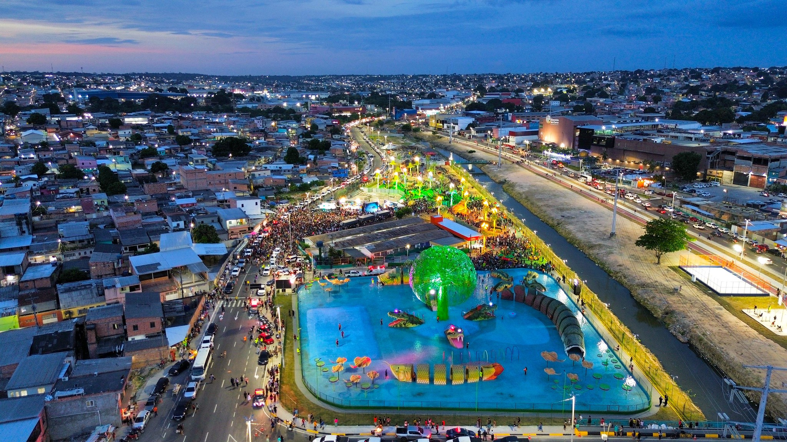

Quinta-Feira, 22 de Janeiro de 2026 | Horário: 10:43
Prefeitura Presente em Sapopemba: inauguração de parque, entrega de moradias e regularização
fundiária transformam a região
Bairro vive um dos períodos de maior avanço de sua história, com mais de R$ 500 milhões em
investimentos da atual gestão em obras e requalificações

O prefeito Ricardo Nunes cumpre uma extensa agenda em Sapopemba, na Zona Leste, nesta
quinta-feira (22), onde inaugura o Parque Fazenda da Juta e entrega 216 unidades habitacionais
do Residencial Tolstói e mais de 1,2 mil títulos de regularização fundiária por meio do programa
Escritura na Mão, além de fazer vistorias durante a ação Prefeitura Presente. Com 350 mil
habitantes, população maior do que a de capitais brasileiras como Vitória e Palmas, a região
vive um dos períodos de maior avanço de sua história, impulsionada por mais de R$ 500 milhões em
investimentos da atual gestão em obras e requalificações em diversas áreas.
O Prefeitura Presente é uma estratégia de gestão que aproxima o poder público do território,
levando o prefeito e todo o secretariado para dentro dos bairros visando acompanhar de perto
obras, serviços e políticas públicas, acelerar soluções e ouvir diretamente a população. A
iniciativa reforça um modelo de governo baseado em presença, diálogo e ação integrada, no qual
decisões são tomadas a partir da realidade local, com respostas mais rápidas, coordenação entre
áreas e foco na entrega concreta de melhorias que impactam a vida das pessoas.
“Hoje é um dos dias de que eu mais gosto: é o Prefeitura Presente. Vou ficar o dia inteiro
aqui em Sapopemba. A gente vai ver obras, fazer reuniões com a comunidade, acompanhar o
andamento das ações, inaugurar obras e coordenar tudo para prestar um serviço cada vez melhor”,
destacou o prefeito Ricardo Nunes durante a reunião do Comitê de Governo Local, seu primeiro
compromisso na região.
No período da manhã, Ricardo Nunes inaugurou o Parque Municipal Fazenda da Juta, o 121º parque
da cidade, que está inserido em uma área de grande relevância ambiental, abrigando nascentes,
córregos e espécies nativas da fauna e da flora. Foram investidos R$ 13 milhões na estrutura,
que tem parquinhos, passarela, academia para terceira idade, sanitários, fraldários,
arquibancada e mirantes de observação acessíveis. A área de 66 mil m² entregue para a população
nesta quinta-feira contempla a primeira fase do projeto, que está com a segunda etapa em
elaboração, para incorporar mais 56 mil m² ao parque, totalizando um espaço verde de 122 mil
m².
VISTORIAS
Na parte da tarde, Ricardo Nunes vistoriou as obras de ampliação do Hospital Dr. Benedito
Montenegro, no Jardim Iva, que está sendo ampliado e modernizado. O local vai aumentar em mais
de 350% o número de leitos, passando de 69 para 312. O prédio terá ainda novos blocos e
integração com uma futura UPA 24 horas e recebeu investimento de mais de R$ 318 da Prefeitura
para essa requalificação completa.
Em seguida, o prefeito acompanhou a revitalização da Praça José Gustavo Paiva, que será um
novo espaço de convivência e lazer, com pista de caminhada e um novo paisagismo. O local tem 1,6
mil² de área e está sendo reformado com recursos do Conselho Participativo.
MORADIAS
Na área da habitação, a região recebeu o Residencial Estação Tolstói, entregue por Ricardo
Nunes durante o Prefeitura Presente. O empreendimento vai beneficiar 216 famílias e foi
viabilizado pelo Programa Pode Entrar – modalidade Aquisição e contou com investimento total de
R$ 45,4 milhões.
O residencial é composto por duas torres, com apartamentos de 42m², 44 m² e 51m², todos com
dois dormitórios, sala, cozinha, banheiro e área de serviço. As unidades serão entregues com
piso laminado na sala e nos quartos, além de cozinha, banheiro e área de serviço com piso e
paredes revestidos, garantindo melhores condições de conforto e qualidade às famílias
beneficiadas.
Finalizando o dia em Sapopemba, Ricardo Nunes participa do Encontro Prefeitura Presente, no
CEU Papa Francisco, onde faz a entrega de mais de 1,2 mil títulos de regularização fundiária
dentro do Programa Escritura na Mão. Com esta ação, a atual gestão alcança mais de 68 mil
títulos de regularização fundiária entregues. Serão beneficiados moradores de duas áreas: Parque
Bancário/Dona Sinhá, com 1.201 títulos, e Vila União, com 37 títulos.
Fonte: Site da Prefeitura de São Paulo, com dados da pesquisa
Datafolha